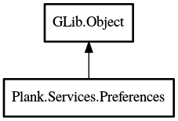

Preferences
Object Hierarchy:

Description:
public abstract class Preferences : Object
The base class for all preferences in the system. Preferences are serialized to files. The file is watched for changes and loads new
values if the backing file changed. When any public property of a sub-class is changed, the public properties are serialized to the
backing file.
Content:
Creation methods:
Methods:
- protected virtual void verify (
string prop)
This method will verify the value of a property. If the value is
wrong, this method should replace it with a sanitized value.
- protected abstract void reset_properties ()
Resets all properties to their default values. Called from construct
and before loading from the backing file.
- protected void init_from_file (
File file)
Initializes this preferences with a backing file.
- protected void init_from_filename (
string filename)
Initializes this preferences with a backing filename.
- public void delay ()
Delays saving changes to the backing file until apply() is called.
- public void apply ()
If any settings were changed, apply them now.
- public
string get_filename ()
Returns the filename of the backing file.
- public void @delete ()
This forces the deletion of the backing file for this preferences.
Signals:
Inherited Members:
All known members inherited from class GLib.Object
- @new
- newv
- new_valist
- get_type
- get_class
- @ref
- unref
- ref_sink
- weak_ref
- weak_unref
- add_weak_pointer
- remove_weak_pointer
- @get
- @set
- get_property
- set_property
- get_data
- set_data
- set_data_full
- steal_data
- get_qdata
- set_qdata
- set_qdata_full
- steal_qdata
- freeze_notify
- thaw_notify
- dispose
- constructed
- notify_property
- connect
- disconnect
- add_toggle_ref
- remove_toggle_ref
- bind_property
- notify
- ref_count